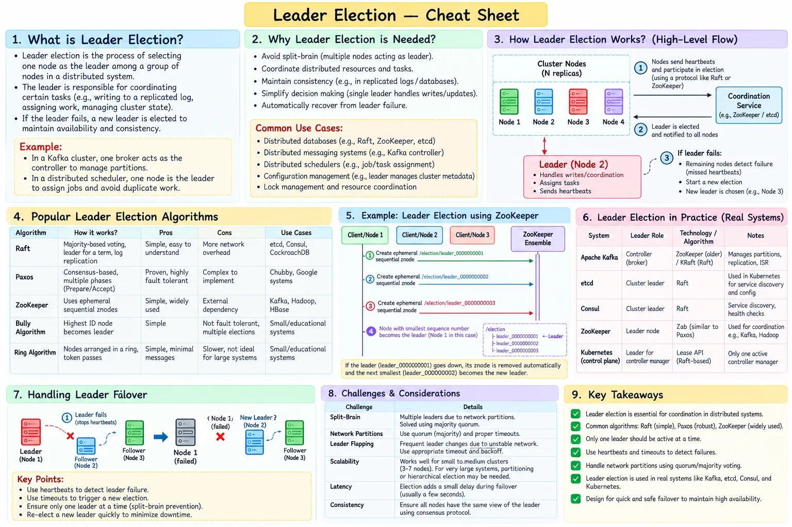

Topic · System Design Fundamentals
Leader Election
Pick exactly one coordinator for writes, scheduling, metadata, or a replicated log - and make sure a stale one can't keep acting.
Cheat sheet


Quick Revision
- Followers receive leader heartbeats; on election timeout a follower becomes a candidate.
- Candidate increments the term, votes for itself, requests votes; a majority winner becomes leader.
- Only a majority partition can elect a leader - no quorum, no leader.
- Terms/epochs + fencing tokens stop stale leaders from writing.
- Modern Kafka uses a KRaft controller quorum (older versions used ZooKeeper).
Design checklist
- Requirements - leader responsibility, failover target, tolerated failures, consistency, partition behavior.
- Estimation - cluster size, heartbeat interval, election timeout, quorum latency.
- High-level design - replicas + consensus group + leader registry; the leader coordinates and replicates state.
- Deep dives - split votes, split brain, fencing tokens, stale leaders, log freshness, flapping, membership changes, no-quorum behavior.
Trade-offs
| Choice | Benefit | Cost / risk |
|---|---|---|
| Short election timeout | Faster failover | False elections, leader flapping |
| Leader-based coordination | Simple ordering, single write authority | Leader bottleneck, unavailable during election |
Failure modes
- Leader stops heartbeating - new term, majority vote, recover the replicated log, resume.
- Isolated old leader keeps writing - term/epoch validation and fencing tokens reject it.
- Leader flapping - randomized election timeouts, pre-vote, backoff, fix the network.
- Cluster loses quorum - stop leader-controlled writes and restore a majority; never elect a minority leader.
Interview practice
Answer aloud, then reveal.
Kotak SDE2 (2026): how does leader election work in practice, and what does it solve?
Missed heartbeats trigger an election. A candidate starts a new term and needs majority votes; the winner is the single coordinator. Terms, quorum, and fencing prevent stale or dual leaders.
Uber L5 (2026): design Kafka.
Partition topics by key; each partition has a leader and followers. Producers write to leaders, consumers track offsets. Replication + in-sync replicas protect data; the KRaft controller quorum manages metadata and controller elections.